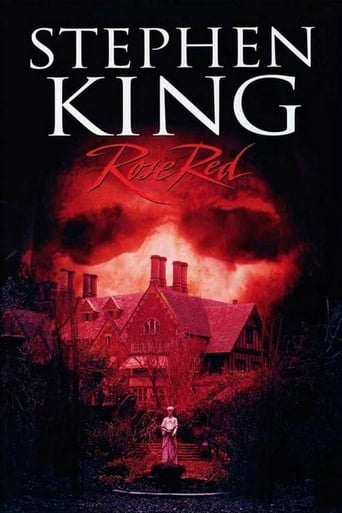
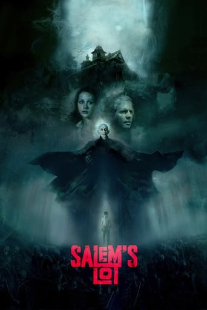
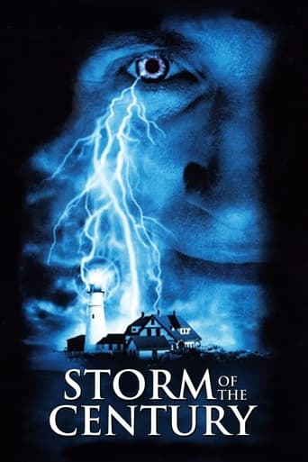
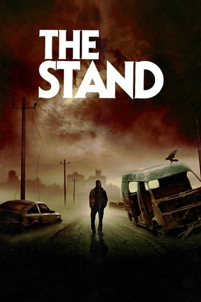
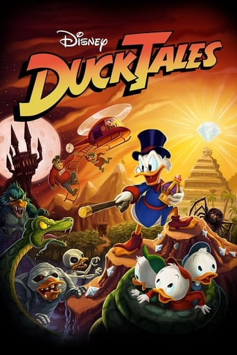
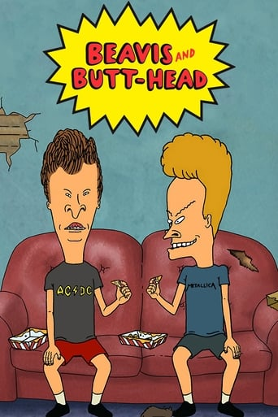
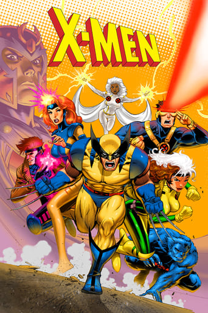
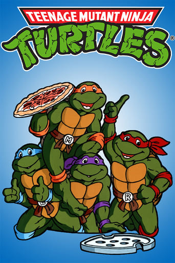

Loading... Playback error. Retrying...Error loading Video. Please try again later. Buffering...Now Playing: It, Season , Episode Paused: It, Season , Episode
Next Episode in seconds
Report Issue
Switch to the legacy player
Autoplay Episodes
It (1990)
It (1990)
Rated: 7.0 out of 10 with 131,227 votes.
In 1960, seven outcast kids known as "The Losers' Club" fight an evil demon who poses as a child-killing clown. Thirty years later, they reunite to stop the demon once and for all when it returns to their hometown.
Show More
Show Less
Main Actors:
Harry Anderson
Richie Tozier
Dennis Christopher
Eddie Kaspbrak
Richard Masur
Stanley Uris
Annette O'Toole
Beverly Marsh
Tim Reid
Mike Hanlon
John Ritter
Ben Hanscom
Richard Thomas
Bill Denbrough

Tim Curry
Pennywise the Dancing Clown
Jonathan Brandis
Bill Denbrough - Age 12
Brandon Crane
Ben Hanscom - Age 12
Adam Faraizl
Eddie Kaspbrak - Age 12

Seth Green
Richie Tozier - Age 12
Emily Perkins
Beverly Marsh - Age 12
Marlon Taylor
Mike Hanlon - Age 12
Olivia Hussey
Audra Denbrough
Sheila Moore
Mrs. Kaspbrak
Jarred Blancard
Henry Bowers - Age 14
Chris Eastman
Belch
Gabe Khouth
Patrick Hocksetter / Victor C...
Michael Ryan
Tom Rogan
Venus Terzo
Cyndi
Frank C. Turner
Al Marsh
Sheelah Megill
Sharon Denbrough
Chelan Simmons
Laurie Anne Winterbarger
Merrilyn Gann
Mrs. Winterbarger
Susan Astley
Aunt Jean
Claire Vardiel
Arlene Hanscom
Garry Chalk
Coach
Terence Kelly
Officer Nell
Steve Makaj
Ben's Father
William B. Davis
Mr. Gedreau
Jay Brazeau
Derry Cab Driver
Charles Siegel
Nat
Kim Kondrashoff
Joey
Scott Swanson
Rademacher
Nicola Cavendish
Desk Clerk
Tom Heaton
Mr. Keene
Paul Batten
Pharmacist
Russell Roberts
Greco
Bill Croft
Koontz
Helena Yea
Rose
Megan Leitch
Library Aide
Laura Harris
Loni (uncredited)
Title:It
Release Date:Sunday, November 18th, 1990
Created by:Stephen King
TV Network:ABC
Genres:MysteryDramaSci-Fi-Fantasy
Keywords:Based-On-Novel-Or-BookSupernaturalMysteryMiniseries
Alternative Titles:'Il' est revenu, Ca "Il" est revenu, Es - Stephen King, Eso El Payaso Asesino, Eso de Stephen King, IL est revenu, IT - Il Pagliaccio Assassino, It (Eso), It - Stephen King, It - Uma Obra Prima do Medo, It de Stephen King, It eso, It: El payaso asesino, Stephen King's Det, Stephen King's It, Stephen Kingin It, Stephen Kingin Se, Stephen Kings Es, To, To afto, Ça (1990), Ça - Il est revenu, Ça Il est revenu, ça - la Série
Season: 1
1 Episode in Nov, 1990
Show Episodes
Hide Episodes
| # | Title | Watched | Air Date | Download | Info | ||
|---|---|---|---|---|---|---|---|
| 1 | Part 1 & 2 | Sunday, November 18th, 1990Sun, Nov 18th, 199011/18/90 |
You may also like these TV Shows:
1995
6.2
The Langoliers
Rated:6.2

2002
6.8
Rose Red
Rated:6.8

1979
6.9
Salem's Lot
Rated:6.9
1993
5.6
The Tommyknockers
Rated:5.6

1999
7.5
Storm of the Century
Rated:7.5

1994
7.3
The Stand
Rated:7.3
1989
8.2
Tales from the Crypt
Rated:8.2

1987
8.3
DuckTales
Rated:8.3

1993
7.7
Beavis and Butt-head
Rated:7.7

1992
8.8
X-Men
Rated:8.8
2011
5.9
Bag of Bones
Rated:5.9

1987
8.1
Teenage Mutant Ninja Turtles
Rated:8.1